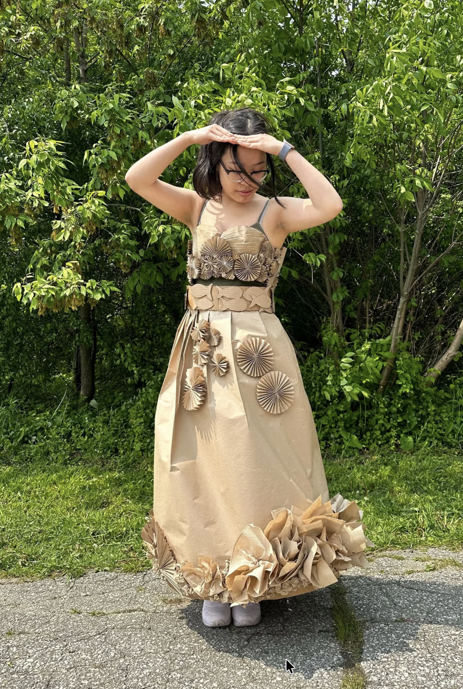
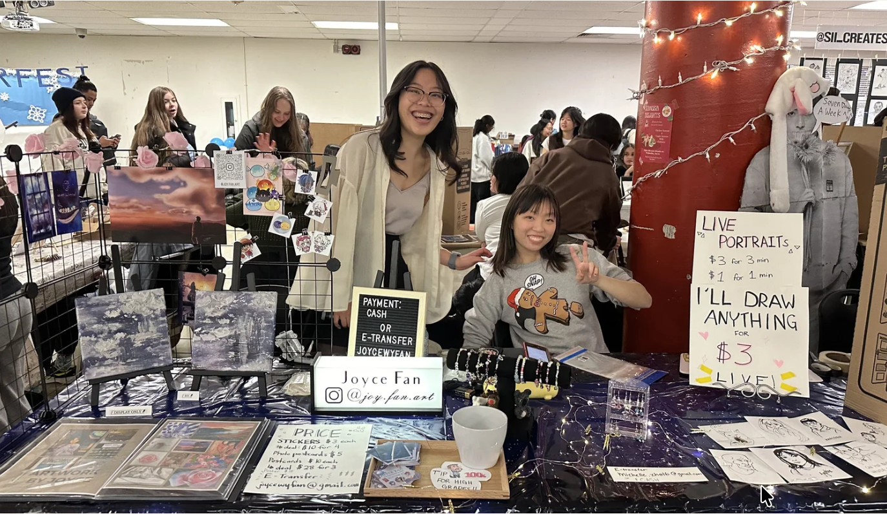

01 — Introduction
A glimpse
of my work




Designer, Artist, Storyteller
A Global Business & Digital Arts student at the University of Waterloo, blending art, design, and storytelling into work that connects people.
About Me01 — Introduction


02 — Features
Here are some projects I've worked on — photography, poster design, product design, art, and more.